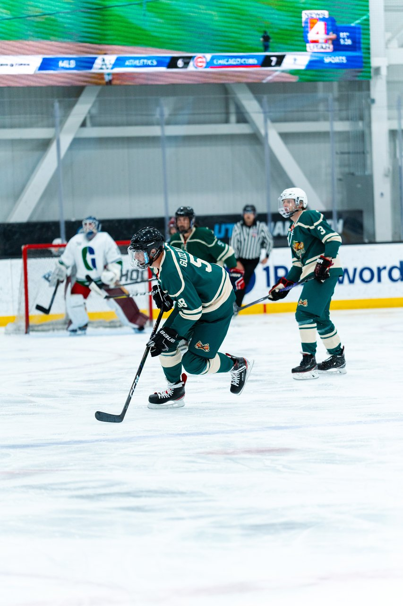
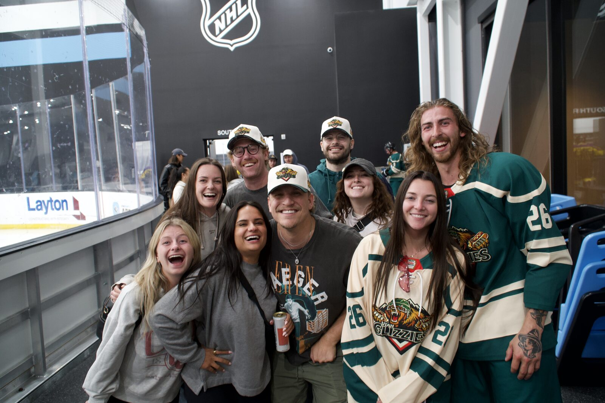

Every week we hear a version of the same message: "I never played growing up, but I want to try hockey now." Good news — you don't need a Utah childhood full of 5 a.m. practices to start. You need a rink with a real adult beginner program, some patience for your first few wobbly sessions, and a plan for what comes after. Here's every Salt Lake-area facility actually set up to teach grown adults how to skate and play, no experience required.
Utah's rinks have seen adult beginner demand climb steadily since the NHL landed in Salt Lake City, and it hasn't slowed down. Fans who spent a season in the stands are now Googling "how do I actually learn to skate" — and the rinks have responded by expanding the very programs that used to be an afterthought. If you want the fuller story on how the Mammoth reshaped the local scene, we covered it in how the Utah Mammoth turned Utah into a hockey state.
These are the facilities in and around Salt Lake City currently running structured adult learn-to-skate or learn-to-play-hockey programs. Schedules and pricing shift seasonally, so confirm current session dates directly with each rink before you show up.

Most programs follow a predictable arc, whether you're at a county rink or the Olympic Oval:
Loaner gear is common for the first sessions at several of these facilities, so you don't need a full equipment closet before your first class. Once you're ready to buy your own, we broke down exactly what to get — and what to skip — in our beer league equipment checklist for beginners.
Finishing a learn-to-play program is the on-ramp, not the destination. The next step is finding a team that actually wants brand-new players instead of tolerating them. That's the entire reason the Utah Glizzies exist. We built our roster around exactly this pipeline — people who watched hockey, learned hockey, and wanted somewhere fun to keep playing it. Our step-by-step guide to joining beer league hockey in Utah picks up right where these classes leave off.
You learned to skate. You learned to stop (mostly). Now come find out what beer league actually feels like — sweatier, funnier, and a lot more fun than the drills.
Meet the Team Go to The PitArrive early to rent or lace up gear — first-timer lines run long. Wear athletic clothes you can move in under whatever pads the rink loans you, and expect your ankles to ache for the first few sessions; that's normal and it fades fast. Most importantly, don't compare yourself to the person next to you who "used to play in high school." You're not behind. You're just starting a season earlier than you think.